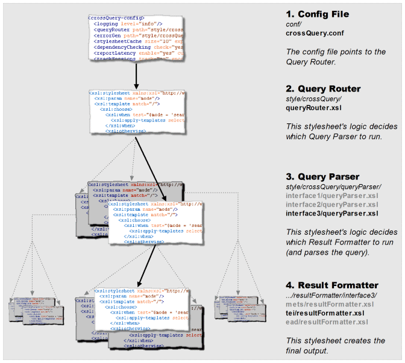
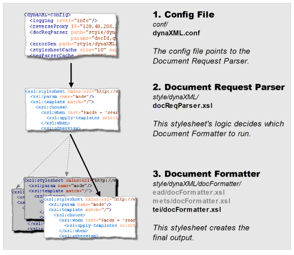

XTF Programming Guide
Table of Contents
- Introduction
- textIndexer Programming
- crossQuery Programming
- dynaXML Programming
- Common crossQuery/dynaXML Programming Tasks
The XTF system consists of Java Servlets and tools that permit users to perform Web-based searching and retrieval of electronic documents. The basic organization of the XTF components can be illustrated as follows:

Figure 1: Extensible Text Framework (XTF) Overview
The remainder of this document will examine how to customize the XTF tools and servlets by reprogramming the XSLT templates that define their behavior. As mentioned above in the introduction, the purpose of the textIndexer tool is to create or update a document search index whenever documents are updated, added to, or removed from the document library. If we would isolate and zoom in on the textIndexer portion of the XTF Overview Diagram shown above, we'd see something like this:

Figure 2: Data Flow within the textIndexer Tool
What the diagram shows, is that the textIndexer uses a Document Selector stylesheet to select which files in the document library need to be indexed. For non-XML document files, the text to index is extracted and converted to XML. This base XML is then processed by the Document Pre-Filter stylesheet to add additional meta-data and/or sectioning information to the text. The resulting filtered XML is then passed on to the actual Text Indexer Engine, which breaks the text up into smaller overlapping chunks and then adds them to a Lucene based word index. The index can then be used by the crossQuery servlet to quickly locate files in the document library containing any text requested by the user. Optionally, the dynaXML servlet can also use the index to highlight in context any matches in the original XML documents when they are viewed.
The textIndexer is capable of handling many documents, of various types, that are filtered in different ways. Here is a diagram showing how the decisions are made.

Figure 3: Decision Tree of the textIndexer Tool
The textIndexer.conf file, the Document Selector stylesheet, and the Pre-filter stylesheet together define how the textIndexer performs the document indexing process. A complete discussion of the textIndexer.conf file appears in the XTF Deployment Guide, and so will not be discussed in any great depth here. The inner workings of the Document Selector and Pre-Filter stylesheets however, are the subject of the following subsections.
<directory dirPath="DirectoryPath"> <file fileName="FileName1"/> <file fileName="FileName2"/> … <file fileName="FileNameN"/> </directory>
The <directory...> tag identifies a single directory in the document library, and the DirectoryPath attribute specifies its absolute file system path. Within the <directory...> tag, each of the <file.../> entries identifies one of files found in the directory. Note that FileName1 through FileNameN do not contain any path information, since the absolute path that applies to all the file tags is already identified by DirectoryPath.
It is the responsibility of the Document Selector XSLT code to output an XML fragment that identifies which of the files in the directory should be indexed. This output XML fragment should take the following form:
<indexFiles>
<indexFile fileName = "FileName"
{format = "FileFormatID"}
{preFilter = "PreFilterPath"}
{displayStyle = "DocumentFormatterPath"}/>
…
</indexFiles>
Note that the output XML consists of a single <indexFiles> container tag and one <indexFile.../> tag for each document file that needs to be indexed. Within each of the <indexFile.../> tags, the following attributes are defined:
This attribute identifies the name of a file to be indexed, and should be one of the file names received in the input XML fragment.
format
This is an optional attribute that defines the format of the file to be indexed. At this time, XML, PDF, HTML, and Plain Text indexing is supported by the textIndexer tool, and this attribute should be set to the strings XML, PDF, HTML, or Text respectively, depending on the native format of the file. If this attribute is not specified, the textIndexer will try to infer the file type based on the extension for the file.
preFilter
This is an optional attribute that defines the Pre-Filter stylesheet that the textIndexer should use on this document file. If not specified, the text for this file will not be filtered before indexing. See the textIndexer Pre-Filter Programming section for more details about document pre-filtering.
displayStyle
This is an optional attribute that defines the Document Formatter stylesheet associated with the given file. If specified, the textIndexer will create a special cache that is used by the dynaXML servlet to display selected documents more quickly. If not specified, the cache for the current file is not created. For more details, see the discussion of Lazy Document Handling in the XTF Under the Hood guide.
Using these XML input and output specifications shown, a simple document selector might look something like this:
<xsl:stylesheet xmlns:xsl="http://www.w3.org/1999/XSL/Transform" version="2.0">
<xsl:template match="directory">
<indexFiles>
<xsl:apply-templates/>
</indexFiles>
</xsl:template>
<xsl:template match="file">
<xsl:if test="ends-with(@fileName,'.pdf')">
<indexFile fileName="{@fileName}" format="PDF"/>
</xsl:if>
</xsl:template>
</xsl:stylesheet>
In this simple Document Selector example, the first line establishes the xsl namespace used in the rest of the stylesheet. Next, the <xsl:template match="directory"> tag looks for the <directory...> block in the input XML, and writes out a corresponding <indexFiles> block to the output XML. Also the <xsl:template match="file"> template is applied to any tags found within the <directory...> block.
The <xsl:template match="file"> block is the code that is actually responsible for selecting the files to be indexed. In this example, only files that end in .pdf are passed on for indexing, and are assigned the format PDF. No Pre-Filter or Document Formatter stylesheets are defined, and so the textIndexer will not pre-filter or pre-cache display information for PDF files.
Selecting other file types for indexing is as simple as adding more <xsl:if...> clauses to the <xsl:template match="file"> block, like this:
…
<xsl:template match="file">
<xsl:if test="ends-with(@fileName,'.pdf')">
<indexFile fileName="{@fileName}" format="PDF"/>
</xsl:if>
<xsl:if test="ends-with(@fileName,'.xml')">
<indexFile fileName = "{@fileName}"
preFilter = "style/textIndexer/default/prefilter.xsl"
displayStyle = "style/dynaXML/docFormatter/default/docFormatter.xsl"/>
</xsl:if>
</xsl:template>
</xsl:stylesheet>
This second <xsl:if...> block passes XML on files for indexing. Note that the <indexFile...> tag doesn't specify the file format, and so the textIndexer is left to infer that the file type is XML from the file extension. Lastly, the <indexFile...> tag also defines a Pre-Filter and a Document Formatter stylesheet for XML files.
While this simple Document Selector example works, its file selection rules are limited only to checking for certain file extensions. Clearly, all the power of XSLT could be used to construct more complicated selection criteria for files, including ignoring various directories, pulling in meta-data from files or URLs, and so on. For a more complete example of a Document Selector stylesheet, see the default style/textIndexer/docSelector.xsl stylesheet.
Defining the XTF Namespace
For the textIndexer pre-filter to work properly, an xtf: namespace must be declared at the top of the pre-filter. To do this, simply add the following attribute to the <xsl:stylesheet...> tag at the top of the pre-filter:
Defining an xtf: namespace in this way and then prefixing textIndexer specific attributes with it allows the textIndexer to distinguish its own attributes from other ones in the filtered document.
Preventing Text from being Indexed
There will be times when the text within certain tags in the XML representation for a document should not be indexed (e.g.: versioning information about the original XML file format.) The XSLT pre-filter can be prevent such tags and their associated text from being indexed. There are two possible ways to do this:
- Standard XSLT programming can be used to eliminate
the tag and its text entirely.
- A special noindex attribute can be added to the tag to tell the textIndexer to ignore its contents when indexing.
A snippet of code showing the use of the noindex attribute can be found in the sample preFilter.xml file that is included with the default XTF installation. It looks as follows:
<xsl:template match="teiHeader">
<xsl:copy>
<xsl:copy-of select="@*"/>
<xsl:attribute name="xtf:noindex" select="'true'"/>
<xsl:apply-templates/>
</xsl:copy>
</xsl:template>
Notice that the noindex attribute when used
in the pre-filter is prefixed with xtf: . This
is the namespace used in XTF tags and attributes to prevent collisions with
similarly named tags and attributes defined by other programs.Finally, it should be mentioned that the noindex attribute has two forms:
noindex = true/yes, false/no
index = false/no, true/yes
Controlling Proximity
If an XTF user specifies a list of words to search for, the crossQuery servlet will rank any matching words that are closer together as better matches than ones that are far apart. This is what is known as proximity searching.There are times however when simple proximity matches will produce undesired results. For example, consider the case where a query matches some words in two different places in a document. For the first match, the words are very close together but in two different chapters' tags. For the second match, the words are all in the same chapter, but slightly further apart. In this case, the proximity search mechanism will incorrectly give a higher score to match with the words that are closer together but split across two chapters.
To correct for these kinds of situations, the pre-filter can insert a proximity break attribute into a tag. Doing so effectively puts an infinite distance between the tag with the break and the text before it, thus entirely preventing proximity matches from being found that span the two tags. For example, to solve the "proximity across chapters" problem described above, a pre-filter might include some code like this:
<xsl:template match="chapter">
<xsl:copy>
<xsl:copy-of select="@*"/>
<xsl:attribute name="xtf:proximitybreak" select="'true'"/>
<xsl:apply-templates/>
</xsl:copy>
</xsl:template>
In this example, the important code is on first and fourth lines. The first
line tells the pre-filter to look for "chapter" tags. And when it finds
one, the fourth line adds a proximity break attribute. Adding this code
to the pre-filter would ensure that proximity matches are never found that
span two "chapter" tags. Sometimes it may still be desirable to find proximity matches across sections, but de-emphasize them compared to matches found entirely within a section. In this case, the sectionBump attribute can be used in place of a proximity break. Unlike the proximityBreak tag, the sectionBump tag can be told how much distance (as a number of words) to introduce between two adjacent sections. For example, this code:
<xsl:template match="chapter">
<xsl:copy>
<xsl:copy-of select="@*"/>
<xsl:attribute name="xtf:sectionBump" select="10"/>
<xsl:apply-templates/>
</xsl:copy>
</xsl:template>
would separate adjacent chapters from each other by ten words. Proximity
matches across chapters would still be found, but they would be considered
10 words further apart (and therefore less relevant) than similar matches
found entirely within a single section. Just as it may be desirable to de-emphasize proximity matches across adjacent sections, it may also be desirable to control proximity matches across sentence boundaries. To accomplish this, the sentenceBump attribute can be added to a tag like this:
<xsl:template match="DocText">
<xsl:copy>
<xsl:copy-of select="@*"/>
<xsl:attribute name="xtf:sentenceBump" select="5"/>
<xsl:apply-templates/>
</xsl:copy>
</xsl:template>
In this example, a hypothetical tag under which all other document tags
and text exist has its sentenceBump value set to 5 words. This effectively
separates the end of one sentence from the beginning of the next by five
words. Doing so makes proximity matches across sentences less relevant than
a similar proximity match entirely within a single sentence.
Sectioning Documents
Another attribute that can be added to document tags is the sectionType attribute. This attribute allows you to assign names to tags within a document. Doing so would allow permit advanced user queries that only search for text in specific section types. Consider the following example:<xsl:template match="ChapterTitle">
<xsl:copy>
<xsl:copy-of select="@*"/>
<xsl:attribute name="xtf:sectionType" select="'ChapterTitle'"/>
<xsl:apply-templates/>
</xsl:copy>
</xsl:template>
This XSLT code simply labels the text indexed for a chapter title with a
"ChapterTitle" section type. With the text labeled in this manner, the query
page presented to the user could provide an advanced search option to look
for text only in chapter titles. We'll talk more about how to actually do
this in the section below on programming
the crossQuery servlet's Query Parser Stylesheet. One other thing to mention about sectionType attributes is that they may be used in nested tags. The textIndexer maintains an internal stack of nested section types, and correctly restores previous section types when a given section/tag ends.
Relevance Boost
There may be times when it is useful to boost or de-emphasize the relevance of text in a particular part of a document. Consider the case where you had a document that was a book of quotations. In such a document, it might make sense to boost the relevance of the text in the actual quotations as compared to any text that discussions the quotations. To facilitate this, the textIndexer pre-filter provides a wordBoost attribute. The following example illustrates its use:<xsl:template match="Quotation">
<xsl:copy>
<xsl:copy-of select="@*"/>
<xsl:attribute name="xtf:wordboost" select="1.5"/>
<xsl:apply-templates/>
</xsl:copy>
</xsl:template>
This XSLT code simply boosts text found in Quotation
tags to be 1.5 times more relevant than non-boosted text in the document.
Conversely, to de-emphasize text simply use a value between zero and one
(e.g., a boost of 0.5 would make text half as relevant when searching.)
As with section attributes, the wordboost attribute may be used in nested tags. The textIndexer maintains an internal stack of nested boost values, and correctly restores previous values when a given section/tag ends. Note however that boost values in nested tags do not accumulate. That is, a tag with a boost value of 1.5 will boost the relevance of its words by 1.5, regardless of the boost values applied to any tags that contain it.
Adding or Marking Meta-Data
There are times when it is useful to record Meta-Data for a document. Meta-Data is simply information about a document that is not part of the document text itself. The author name, document publication date, and document revision are all examples of Meta-Data. The textIndexer system supports the concept of Meta-Data through the use of the meta attribute. Using the pre-filter to add this attribute to a tag causes name of the tag and its contents to be recorded in a special Meta-Data section of the index for the document. For example:<xsl:template match="PublicationInfo">
<xsl:copy>
<xsl:copy-of select="@*"/>
<xsl:attribute name="xtf:meta" select="'true'"/>
<xsl:apply-templates/>
</xsl:copy>
</xsl:template>
This snippet of pre-filter code would take any tag with the name PublicationInfo and add a meta attribute to it, thus telling the textIndexer to add the publication info to the meta-data index for the current document rather than the main text index. Once meta-data has been recorded for a document, it can be searched by modifying the crossQuery servlet's Query Parser Stylesheet to generate meta search requests. Doing so is described in detail below in the Query Parser Programming section below.
Another way in which meta-data for a document can be used is as a query sort key. Sort keys are used by the crossQuery servlet to reorder how query matches are displayed for the user. To use a meta-field as a sort key, its contents must not be tokenized. Since tokenizing is turned on by default to make a meta-data field searchable, the pre-filter code that processes meta-data must explicitly turn tokenizing off. This is accomplished as follows:
<xsl:template match="PublicationInfo">
<xsl:copy>
<xsl:copy-of select="@*"/>
<xsl:attribute name="xtf:meta" select="'true'"/>
<xsl:attribute name="xtf:tokenize" select="'no'"/>
<xsl:apply-templates/>
</xsl:copy>
</xsl:template>
Like the previous example, this pre-filter code would take any tag with the name PublicationInfo and mark it as meta-data. But the addition of the line of code shown in red disables tokenizing so that the meta-data can be used as a sort key by the crossQuery servlet.
It is important to note that since meta-data must be tokenized to be searchable, and it must not be tokenized to be used as a sort key, meta-based searching and sorting operations are effectively mutually exclusive. If you want to perform both searching and sorting on a collection of meta-data, you'll need to add code to your prefilter to produce two copies of that meta-data: one copy for searching that is tokenized, and one copy for sorting that is not tokenized.
Pre-Filters and Lazy-Tree Building
The XTF system makes use of Lazy Tree files to help speed
document retrieval and to help the dynaXML servlet highlight
search results in context. By default, lazy tree files are generated at
index time by the textIndexer. However, through the use
of the -nobuildlazy command-line argument,
the textIndexer can be instructed to not build the lazy
tree files. In this case, the dynaXML servlet will build
the lazy trees files when it needs them.
If the -nobuildlazy command-line is used to delay the building of lazy tree information until document retrieval, it is imperative that the prefilter specified by the docSelector.xsl stylesheet is the same one specified by the dynaXML's docReqParser.xsl stylesheet. If the two stylesheets use different prefilters, the search result information generated by the crossQuery servlet will not match the highlighting information in the lazy tree files generated by the dynaXML servlet, and chaos will ensue.
In closing, a few additional facts should be mentioned about the attributes supported by the XTF system:
- All the examples above show the textIndexer
pre-filter adding attributes to the XML representation for a document.
However, for native XML documents, the attributes could have simply been
embedded in the original source document tags. The disadvantage of doing
so, however, is that the attributes in every XML document would need to
be updated whenever indexing changes are made to the XTF system.
- A single tag can be assigned more than one attribute.
For example, a tag could be assigned both a word boost and a section title
if desired. Note however that some combinations (like sectionType
+ proximitybreak) are redundant and unnecessary.
- Currently, when a meta attribute is added to a tag, all the other XTF specific attributes are ignored (e.g., wordboost, proximitybreak, etc.)
The crossQuery servlet previously shown in the XTF overview allows users to search the document library for particular words or phrases. If we look more closely at the crossQuery portion of the XTF Overview Diagram, we'll see something like this:

Figure 4: Data Flow in the crossQuery Servlet
This query URL is then passed on to the crossQuery servlet for
processing. The first thing the servlet does is translate the query URL into
an XML query that the crossQuery search engine can actually
understand. This translation is accomplished by the XSLT based Query Parser
(queryParser.xsl.)
The crossQuery search engine then uses the XML query to look
for occurrences of the specified text in the document index. Any matches that
are found in the index are assembled into a list of XML tags, and passed on
to Result Formatter stylesheet (resultFormatter.xsl.)
The Result Formatter stylesheet then converts the list of matches into
HTML for review by the user.
Thus, XTF allows you to configure, through stylesheets, exactly how queries will be interpreted and how the results will be formatted. For advanced users, there is one more level of configurability: you can actually implement several independent query interfaces, each with their own Query Parser. How does the crossQuery servlet decide which parser to run? By calling another stylesheet you can optionally configure, the Query Router. Note that routing is an advanced feature, and most first-time XTF implementors should stick with the default router and focus on the Query Parser.
Here's a diagram showing the path of decision making in crossQuery.

Figure 5: Decision Tree of the crossQuery Servlet
A great way to get a hands-on feel for how crossQuery works is to use the built-in "Debug Step" mode. Simply add &debugStep=1 to any search URL. The generated web page will let you step through the entire process, with detailed explanations and real data. The first step looks like this:

Figure 6: Using crossQuery's Debug Step Mode
The remaining two subsections describe in detail how to write Query Parser and Result Formatter XSLT code to carry out the necessary translations.
What we're trying to find here is any document containing both "man" and "war", but not "Man of War", which is a kind of jellyfish. In theory, the web page into which the user types the search query could take a simplified English-like representation of the query with the form:
but writing an XSLT parser to process it would be a complicated endeavor. To simplify things, we'll assume that the web page has a field that accepts all the words or phrases to find, and another field that accepts all the words or phrases to exclude. For our specific example, the user would type
into the text to find field, and
into the text to exclude field. Note that each word or phrase is separated from the others by a space, and that an exact phrase (like Man of War) is enclosed in double-quotes to differentiate it from a list of individual words. The resulting query URL that would be passed to the crossQuery servlet would then look something like this:
Notice that the first part of the URL (everything before the ? symbol) invokes the crossQuery servlet, and second part of the URL (everything after the ? symbol) defines the search to be performed. Also notice that search to be performed is represented by two parameters:
| text=man+war | The list of words search for. |
| text-exclude=%22Man+of+War%22 | The phrase to exclude from the search. |
These two parameters carry the "find" and "exclude" semantics represented by the two fields of our imagined query Web-Page. As is typical for URLs, the spaces in each parameter have been replaced with plus signs (+), and the double-quote characters have been replaced with their ANSI equivalent hexadecimal values.
Since the Query Parser is written in XSLT, it actually expects an XML document as its input, and not a URL like the one presented above. Consequently, the crossQuery servlet preprocesses the query URL and turns it into an XML input fragment for the Query Parser to translate. In general, the input XML passed to the Query Parser looks like this:
<parameters> <param name="ParamName" value="ParamValue"> Token | Phrase Token | Phrase … </param> … </parameters>where Token specifies a single word, and has the form:
where
| value="Word" | is the actual word or symbol extracted from the URL. |
| isWord="YesOrNo" | identifies whether the token is a word or punctuation symbol. |
and Phrase specifies an entire phrase extracted as a single string, with the form:
<phrase value="StringOfWords"> Token … Token </phrase>where
| value="StringOfWords" | is the entire phrase extracted from the URL as a single string. |
| Token...Token | is the original phrase broken down into individual token tags for each word or symbol in the phrase. |
For our particular example URL, the input XML fragment passed to the Query Parser would be:
<parameters>
<param name="text" value="man war">
<token value="man" isWord="yes"/>
<token value="war" isWord="yes"/>
</param>
<param name="text-exclude" value=""Man of War"">
<phrase value="Man of War"/>
<token value="Man" isWord="yes"/>
<token value="of" isWord="yes"/>
<token value="War" isWord="yes"/>
</phrase>
</param>
</parameters>
As mentioned before, it is the job of the the Query Parser XSLT code
to translate the above input into an XML query that the crossQuery
search engine understands. The general format of an XML query passed to the
search engine has the form: <query indexPath="LocationOfIndexDBToUse" style="ResultFormatterLocation"> QueryElements </query>
The <query...> tag is always the outermost
tag in a query, containing all the other tags that define the query to be
performed. Through its indexPath="LocationOfIndexDBToUse"
attribute, this tag identifies the Lucene index to use when performing the
query. Through its style="ResultFormatterLocation"
attribute, it also defines the path to the Result
Formatter XSLT stylesheet that will format the query results. For both
attributes, the path specified is relative to the base install path for
the XTF system (i.e., XTF_HOME.)
Within the <query...> tag, the QueryElements
identify the type of query to perform. The simplest query that can be performed
is a query for a single word, or term. It has the form:
<term field="FieldToSearch"> WordToFind </term>
This tag indicates that we wish to find a single word in the field identified
by field="FieldToSearch"
. If we wish to search the main text of a document, FieldToSearch
should be set to text.
If we wish to search meta data for a document, we would use a meta-data
field name instead, like creator or subject.
Once the search field been identified, the single word we actually wish
to find should substituted for WordToFind.
The next simplest query to perform is a phrase query. It has
the form:
<phrase field="FieldToSearch"> Term Term … </phrase>
This query contains one or more term tags that together identify a phrase to find, rather than a single word. For example, the "Man of War" phrase in our sample query above would be constructed using the <phrase...> and <term...> tags as follows:
<phrase field="text">
<term> Man </term>
<term> of </term>
<term> War </term>
</phrase>
It should be noted from this example the field="FieldToSearch" attribute doesn't need to be specified in each of the <term...> tags, since the enclosing <phrase...> tag has already identified the field to be searched.
The one remaining query element that we would need to construct a complete query for our man and war not "Man of War" example is the query clause. It has the form:
<ClauseType field="FieldToSearch"> Term | Clause Term | Clause … </ClauseType>Where valid ClauseType values are and, or, not, near, phrase, and exact. Each of these clause types do pretty much what you would expect:
- The and clause requires all its sub-terms/phrases/clauses to be present for a match to occur.
- The or clause requires any one of its sub-terms/phrases/clauses to be present for a match to occur.
- The not clause requires that none of its sub-terms/phrases/clauses are present for a match to occur.
- The near clause requires all its sub-terms/phrases/clauses to be near each other for a match to occur. The definition of near is fairly complicated, and will not be discussed here. See the Query Parser tag reference for an in-depth description of the near clause.
- The exact clause operates just like the phrase clause, except that it matches the entire contents of a field only, whereas a phrase clause can match anywhere within the field.
the complete query would look as follows:
<query indexPath="./index" style="./style/crossQuery/resultFormatter.xsl">
<and field="text">
<term> man </term>
<term> war </term>
<not>
<phrase>
<term> Man </term>
<term> of </term>
<term> War </term>
</phrase>
</not>
</and>
</query>
At this point, the trick is to write a queryParser.xsl
stylesheet that converts the given input XML fragment into the output XML
query shown above. Unfortunately, writing XSLT is well beyond the scope of
this document and will not be discussed here. The good news however is that
the sample queryParser.xsl included with the XTF
installation performs the necessary query conversion illustrated in this example,
and is a good starting point for creating your own custom Query Parser. It should also be noted that the various query tags illustrated here have been shown in their simplest form for the sake of clarity. For example the Query tag has additional attributes that allow query matches to be returned a few at a time. This allows the Result Formatter to display a short page of search results rather than a single page containing every result in the repository. Another thing to note is that Phrase tags are in fact recursive, and can contain sub-phrases or clauses (not just Term tags.) For a complete description of query tags and the attributes they support, please refer to the Query Parser Tag Reference.
The last stage in the crossQuery data flow is formatting the results. Recall that the URL parameters were parsed into an XTF-compatible query by the Query Parser stylesheet. Then the Text Engine runs that query against indexed data, resulting in a list of matching documents. The final task is to put a pretty face on things, and that's where the Result Formatter stylesheet enters in. It transforms the XML list of documents into an easy-to-use HTML result page.
How does XTF know which stylesheet to use? Simple: the Query Parser tells it. The <query...> tag it outputs specifies a style attribute, which points at the Result Formatter stylesheet that you want XTF to run. Thus, it is quite possible -- and often useful -- to have multiple result formatters for different purposes or display modes, and program the Query Parser to decide which formatter to run based on a URL parameter. But we'll assume for now that you only have one formatter.
To accomplish its work, the Result Formatter receives three pieces of data:
- First, it receives the same <parameters...> block that was passed to the Query Parser. This contains parsed versions of all the URL parameters, in case the Result Formatter wants to act on these as well.
- Next, it also receives a copy of the full <query> element that was produced by the Query Parser.
- Finally and most importantly comes a list of documents that matched the query. Each <docHit...> element will contain meta-data in addition to snippets of matching text from the main body of each document.
It's easy to view the XML that crossQuery sends to the Result Formatter. Simply append &raw=1 to the URL, and the servlet will bypass the formatter completely and display the raw XML directly in your browser. A great way to plan your stylesheet is to run some sample queries and look at the raw XML, then try to envision how you want it to look in HTML.
Here's a real-life sample of Result Formatter input, coming from a query for the words "man" and "war". Much of the repetitive information has been snipped out so you can get a quick idea of the structure without getting bogged down in details.
<crossQueryResult queryTime="0.32" totalDocs="8" startDoc="1" endDoc="8">
<parameters>
<param name="text" value="man war">
<token value="man" isWord="yes"/>
<token value="war" isWord="yes"/>
</param>
...additional URL parameters here...
</parameters>
<query indexPath="index" termLimit="1000" workLimit="1000000"
style="style/crossQuery/resultFormatter/default/resultFormatter.xsl"
startDoc="1" maxDocs="10">
<and field="text" maxSnippets="3" maxContext="100">
<term>man</term>
<term>war</term>
</and>
</query>
<docHit rank="1" path="default:r1/ft2s2004r1/ft2s2004r1.xml" score="100" totalHits="3">
<meta>
<title>Asylia: Territorial Inviolability in the Hellenistic World</title>
<creator>Kent J. Rigsby</creator>
...more meta-data here...
</meta>
<snippet rank="1" score="100">inspoliatus : [Sall. ] Resp . 1.2.7, in the civil <hit>
<term>war</term>
<term>men</term>
</hit> fled to Pompey "as debtors use a sacred</snippet>
<snippet rank="2" score="53">he explains, will win the favor of gods and <hit>
<term>men</term>, and just <term>wars</term>
</hit> are defensive. The locus classicus is</snippet>
<snippet rank="3" score="53">the Roman peace, which ended the state of <hit>
<term>war</term> among <term>men</term>
</hit>). More generally, legend told of various</snippet>
</docHit>
<docHit rank="2" path="default:7d/ft7w10087d/ft7w10087d.xml" score="76" totalHits="6">
<meta> ...meta-data here... </meta>
<snippet rank="1" score="100">the mother of shields." Kunu refers to the <hit>
<term>war</term> shields <term>men</term>
</hit> used to fashion from lighter bark, some</snippet>
...more snippets here...
</docHit>
<docHit rank="3" path="default:pf/ft7r29p1pf/ft7r29p1pf.xml" score="76" totalHits="2">
...meta-data and snippets here...
</docHit>
...additional document hits here...
</crossQueryResult>
Essentially, each matching document will have a corresponding <docHit> tag, and these will be sorted in some order, generally by descending score (relevance). Each document hit contains corresponding meta-data within a <meta> sub-tag. Hits on the full text of the document will have <snippet> tags, each with its own <hit> tag inside it.
A little more formally, the result formatter receives a <crossQueryResult> tag that looks like this:
<crossQueryResult queryTime = "TimeInSeconds" totalDocs = "NumberOfDocs" startDoc = "FirstDocNumber" endDoc = "LastDocNumber"> Parameters Query DocumentHit DocumentHit … </crossQueryResult>
Note that, depending on the query and the size of the document repository, there might be thousands of matching documents, and this thousands of <docHit> tags. Suppose you only wanted to display the first page of hits, say ten of them? It would be simple to make a Result Formatter that simply picked the first 10 and ignored the rest, but that would be very inefficient because the XSLT processor will still have to parse and process all of the document hits. A much more efficient way to handle paging is to modify the Query Parser to specify maxDocs="10" in the <query> element; then only the first ten document hits will be passed to the Result Formatter and the user interface will be much more responsive.
Each Document Hit looks like this:
<docHit rank="DocRelevanceRank" path="DocumentLocation" score="DocRelevanceScore"> <meta> Meta-data defined by index Pre-Filter stylesheet </meta> Snippet Snippet … </docHit>
The meta-data is copied directly from the tags in the input document marked by the index Pre-Filter stylesheet using the xtf:meta="yes" attribute. If the query targets meta-data fields, these may have <snippet> and/or <hit> tags embedded within them, marking the exact location of the matching terms.
If the query targets the "text" field -- that is, the full document text -- then the <docHit> tag will have one or more <snippet> tags containing the matching text and some surrounding context:
<snippet rank="MatchRelevanceRank" score="MatchRelevanceScore"> Hit Text (and context text, if any) </snippet>
Within each snippet will appear a <hit> tag with one or more <term> tags marking the exact matching terms.
The bulk of the Result Formatter's work will be in transforming all these <docHit>, <meta>, <snippet>, <hit>, and <term> XML tags into meaningful HTML output. Writing XSLT is beyond the scope of this document, but a good way to learn is to begin modifying the sample Result Formatter stylesheet. The stylesheet is included with the XTF distribution in the style/crossQuery/resultFormatter directory.
It should also be noted that the various input tags have bells and whistles
not mentioned in this short tutorial. For a full specification, please refer
to the Result
Formatter Tag Reference.
A fully fleshed-out crossQuery system will need to handle errors gracefully. You may also wish to add session state features (to record data that persists across page views.) Since these tasks are common to both servlets, they are documented in the Common crossQuery/dynaXML Programming Tasks section below.
The dynaXML servlet is in charge of displaying a single XML
document, often in small chunks or pages, one page at a time. It forms part
of a complete search and display system: the user can search a collection
of documents using crossQuery, and when they find a document
of interest, they can explore the contents of that document using dynaXML.
If we look more closely at the dynaXML portion of the XTF
Overview Diagram, we see something like this:

Figure 7: Data Flow in the dynaXML Servlet
Data flow in this diagram is from left to right. First, the user specifies
a document to view by sending a URL that looks like this (in its simplest
form):
The dynaXML servlet breaks up the URL parameters and formats them in XML. This is passed to the Document Request Parser stylesheet, which figures out where to find the specified document and decides which stylesheet will be used for formatting the result page. Also, if a search query is included in the URL, the parser transforms the query into structured XML that the Text Engine can understand.
Optionally, the parser can also specify authentication to perform, allowing the system to secure access to sensitive or protected documents. XTF's user authentication engine checks the user's credentials using the specified authentication method.
Next, the servlet fetches the source XML document. If a search query was specified, it uses the Text Engine to search for occurrences of the specified text, and then inserts hit tags and snippets in their proper context within the original document.
Finally, the (possibly marked up) document is passed to the Document Formatter stylesheet, which creates the final HTML page to display in the user's browser.
Thus, XTF allows you to configure, again through the use of stylesheets, where documents will be stored, how they can be queried, and precisely how they will be displayed to the user. How are all these decisions made? This diagram should clarify the chain of logic:

Figure 8: Decision Tree of the dynaXML Servlet
The following sections cover the basics of programming stylesheets to drive dynaXML.
Document Request Parser Programming
As discussed above, the Document Request Parser is responsible for interpreting a URL based query. XTF allows great flexibility in terms of how URLs are constructed and interpreted, and this stylesheet is the key to that flexibility.
The main tasks of the Document Request Parser are:
- Use the URL parameters to determine which document to display, and figure
out exactly where to find it. Typically it will come up with a full path
to an XML file in the filesystem, but it can also come from an external
HTTP source.
- Decide which Document Formatter stylesheet to use. Many systems
will have only one Document Formatter, but one can set up a more complex
system where different formatters are used for different types of documents,
or are switched by a URL parameter.
- Specify what authentication is required to view the document, if any.
This can be IP-based filtering, looking up a username/password in an LDAP
database, or using an external login web page.
- If a text query is specified, the Document Request Parser is responsible for structuring that query in the same fashion as crossQuery's Query Request Parser. In fact, it often makes sense for one parser to call the other, or for them to share a common stylesheet that handles parsing duties.
Suppose a user, through crossQuery, searches for the word "apartheid". The top document hit will be the book The Opening of the Apartheid Mind (assuming you've indexed the sample data available with the XTF distribution.) If the user clicks on that title, dynaXML is then invoked with a URL like this:
http://yourserver:8080/xtf/view?docId=mm/ft958009mm/ft958009mm.xml&query=apartheid
Notice that the first part of the URL (everything before the ? symbol)
invokes the dynaXML servlet, and second part of the URL (everything
after the ? symbol) defines which document to display and a text query
to run on it. | docId=mm/ft958009mm/ft958009mm.xml | The identifier of the document to view. |
| query=apartheid | The word to search for in the document. |
The dynaXML servlet transforms the URL parameters into an XML document, suitable for processing by the Document Request Parser (which is of course written in XSLT.) The parser included with the XTF distribution is called docReqParser.xsl, and we'll discuss what it does below.
The input document will always have the form:
<parameters> <param name="ParamName" value="ParamValue"> Token | Phrase Token | Phrase … </param> … </parameters>where Token specifies a single word, and has the form:
where
| value="Word" | is the actual word or symbol extracted from the URL. |
| isWord="YesOrNo" | identifies whether the token is a word or punctuation symbol. |
and Phrase specifies an entire phrase extracted as a single string, with the form:
<phrase value="StringOfWords"> Token … Token </phrase>where
| value="StringOfWords" | is the entire phrase extracted from the URL as a single string. |
| Token...Token | is the original phrase broken down into individual token tags for each word or symbol in the phrase. |
For the sample URL above, the XML passed to the Document Request Parser
looks like this:
<parameters>
<param name="docId" value="mm/ft958009mm/ft958009mm.xml">
<token value="mm/ft958009mm/ft958009mm.xml" isWord="yes"/>
</param>
<param name="query" value="apartheid">
<token value="apartheid" isWord="yes"/>
</param>
</parameters>
Our example doesn't have a phrase in it or a multi-word parameter, but if you're curious how those would look, see the example in the section on Query Parser Programming above.
The sample docReqParser.xsl creates the following output based on the input <parameters> block.
<style path="style/dynaXML/docFormatter/default/docFormatter.xsl"/>
<source path="data/mm/ft958009mm/ft958009mm.xml"/>
<index configPath="conf/textIndexer.conf" name="default"/>
<query indexPath="index" termLimit="1000" workLimit="500000">
<and field="text" maxSnippets="-1" maxContext="80">
<term>apartheid</term>
</and>
</query>
<auth access="allow" type="all"/>
Let's analyze this in small pieces.
<style path="style/dynaXML/docFormatter/default/docFormatter.xsl"/>
The <style> tag directs dynaXML to the Document Formatter stylesheet to use for this request. The path is relative to the XTF base directory.
<source path="data/mm/ft958009mm/ft958009mm.xml"/>
Next, the <source> tag identifies the location of the source document that should be displayed. Again the path is relative to the XTF base directory. The sample data is laid out in subdirectories based on deconstructing the document ID, but one could write a parser that used some other strategy for locating documents.
<index configPath="conf/textIndexer.conf" name="default"/>
For speed, dynaXML includes a facility called "Lazy Trees" which creates a binary representation of the input document on disk. The binary version is much faster to process, especially if the input document is large but the parts of it needed by the Document Formatter are small. In any case, dynaXML needs to know where to find the Lazy Trees created by the textIndexer, or where to create them if not found. The <index> tag tells it where to find the index configuration file, and the name of the index subset. If you're interested in learning more about Lazy Trees, see XTF Under the Hood.
<query indexPath="index" termLimit="1000" workLimit="500000">
<and field="text" maxSnippets="all" maxContext="80">
<term>apartheid</term>
</and>
</query>
Next comes a query to run against the full text of the document. Of course the query is optional, but if included, its format is exactly the same as the output of crossQuery's Query Parser. In fact, the default docReqParser.xsl simply uses <xsl:import> to incorporate queryParser.xsl, and uses its templates to do the work of parsing and formatting the text query.
One curious thing to see here is maxSnippets="all". In this case, all is a special value, telling the Text Engine to gather all of the snippets/hits for the given document. If you only wanted the ten best scoring hits, you could specify maxSnippets="10" instead.
<auth access="allow" type="all"/>
The final tag produced by the Document Request Parser is the <auth> tag, which specifies authentication to perform. The simplest tag is shown above, and simply allows access to all users. Other authentication mechanisms are available; for more information please consult the section on User Authentication in the XTF Deployment Guide. Multiple <auth> tags will be processed in order until one succeeds or fails.
Customizing the Document Request Parser is beyond the scope of this
document, but a good place to start is by incrementally modifying the sample
docReqParser.xsl included with the XTF distribution.
Document Formatter Programming
The Document Formatter stylesheet receives as its input the requested XML document. For its output it should produce an HTML based document web-page that can be viewed in the user's browser.The XML document passed by the dynaXML servlet to the Document Formatter stylesheet consists of the original XML source document with the following additions:
- Any added attributes
introduced by the textIndexer Pre-Filter when the
document was indexed.
- If a query accompanied the document request, a
snippets tag will appear at the top of the document, summarizing
of all the hits found within the document, including a configurable amount
of surrounding text.
- If a query accompanied the document request, then zero or more hit and term tags will appear around matching text in the main body of the document for the given query. If a hit spans the boundary between one XML element and the next, the hit tag will end and a more tag will resume inside the next element.
The snippets summary tag will have the following form:
<xtf:snippets>
Snippet
Snippet
…
</xtf:snippets>
where each Snippet is a dynaXML snippet tag that summarizes one query match in the requested document.
The additional tags and attributes added by the textIndexer and the dynaXML servlet are prefixed with an xtf: namespace to clearly differentiate them from other tags in the XML document.
It should be noted that, unlike the Result Formatter in crossQuery, the Document Formatter does not receive the <parameters> block from the URL request. But if it needs access to the URL parameters, they are always available through global <xsl:param> declarations.
Sometimes it is helpful to view the raw XML that dynaXML passes to the Document Formatter. To do this, add &raw=1 to the URL, and the servlet will bypass the formatter completely and display the raw XML directly in your browser. Beware however that large documents may take quite some time to process and transmit.
Writing the Document Formatter can be quite challenging, as many options are possible and the output is very dependent on the structure of the input XML document. In addition, if your collection includes several types of documents, you may need several formatters. Writing XSLT is beyond the scope of this tutorial, but you may get some ideas by examining the sample docFormatter.xsl included with the XTF distribution.
As with everything in XTF, it is advisable (and fun) to start with something simple and then progressively refine the stylesheets over time.
A fully fleshed-out dynaXML system will need to handle errors
gracefully. You may also wish to add session state features (to record data
that persists across page views.) Since these tasks are common to both servlets,
they are documented in the Common crossQuery/dynaXML
Programming Tasks section below.
Common crossQuery/dynaXML Programming Tasks
The dynaXML and crossQuery servlets share some aspects of their operation. Instead of repeating the documentation for these common parts in each section, these common tasks are collected below.
Error Generator Programming for crossQuery and dynaXML
It's not a perfect world, and errors happen. For the times when they do, the crossQuery and dynaXML servlets include a handy stylesheet-based mechanism to put a nice face on things, creating a formatted HTML page letting the user know what happened, and potentially how to fix it. This stylesheet is called the Error Generator.
Here are the main sources of errors that activate the servlet's error handling mechanism:
- Configuration errors, such as invalid parameters in the crossQuery.conf or dynaXML.conf file, or missing stylesheets.
- Errors detected by the Query Parser stylesheet. It lets the servlet know something went wrong by outputting an <error> tag instead of the normal <query> tag.
- Incorrect syntax in the <query> tag produced by the Query Parser.
- Incorrect syntax in the tags produced by the Document Request Parser.
- Problems that occur while the Text Engine is reading the input document or executing a query. Some such errors include trying to query a document that hasn't been indexed, or attempting a wildcard query on too many terms.
- Bugs in the XTF system itself (hopefully very rare.)
In all these cases, the servlet looks in the crossQuery.conf or dynaXML.conf file for the <errorGen> tag that specifies an Error Generator stylesheet to run. The servlet constructs a small input document with details about the particular error and passes it to the Error Generator, whose job is to output a nice-looking error page.
The following query will create an error with the sample distribution (it performs a wildcard query on all terms):
This exceeds the default limit on the number of terms a query can access, so crossQuery calls the Error Generator with the following input:
<TermLimit>
<message>
Wildcard query on 'text' matched too many terms (more than 1000).
First 50 matches: $ + 0 0.0 0.00 0.0001 0.001 0.0015 0.0029 0.003
0.0034 0.004 0.005 0.006 0.007 0.008 0.009 0.01 0.010 0.011 0.012
...more terms here...
</message>
</TermLimit>
Writing the XSLT code that transforms the various error tags is beyond the scope of this document, but the default Error Generator included with the XTF distribution is a good place to start. It can be found in the style/crossQuery directory.
An easy way to check the input to your Error Generator is to add &raw=1 to your query URL. When an error occurs, the servlet will dump the raw XML to the browser, instead of sending it to the stylesheet.
Each kind of error specifies different information for the Error Generator to work on. For instance, authentication failures include the requestor's IP address, whereas internal errors include a Java stack trace. For a full list of the various errors that may be sent by crossQuery to the Error Generator, please consult the Error Generator Stylesheet Reference.
By default, crossQuery and dynaXML are "stateless", that is, they don't remember anything from one request to the next. Any given URL request is treated separately, and all the servlet knows is what is present in the URL parameters.
URL parameters are fine for small pieces of data that change frequently, such as query parameters, page number, document ID, etc. However they're cumbersome for large amounts of data, or information that doesn't change frequently. This is where XTF's Session State Tracking facilities come in handy.
Once session tracking enabled, XTF will associate a session ID with the first request made by a particular user. As the user clicks on links from that page, the session ID will automatically track along with each page view. Your parsing and formatting stylesheets can store and retrieve data in the session, and this data will be available on subsequent requests.
A brief tutorial on session tracking follows; details of the functions
are detailed in the Session
State section of the XTF Stylesheet Reference.
Enabling Session Tracking
Before attempting to store or retrieve session data, you must enable session tracking in the configuration file of the servlet(s) you're using (i.e. dynaXML.conf and/or crossQuery.conf). The line to enable tracking looks like this:
Storing and Retrieving Session Data
Once enabled, XTF's built-in XSL extension functions can be used to store or retrieve data in the session associated with a given request. For example, here's some XSL code to store a value in the session:
<xsl:stylesheet xmlns:session="java:org.cdlib.xtf.xslt.Session"...> ... <xsl:value-of select="session:setData('someName', 'someValue')">
As you see, the session:setData function can be used like any other XPath function, as long as the proper namespace has been declared. It places data into the session under the given name (replacing any previous data with that name.)
In general the session data can contain as many name/value pairs as you wish to place into it. The the value can be either a string or structured XML; if you use XML that contains more than one element, be sure to include a single outer wrapper element as in the following example:
<xsl:variable name="newValue"> <myWrapper> <element1>...</element1> <element2>...</element2> ... </myWrapper> </xsl:variable> <xsl:value-of select="session:setData('someName', $newValue)">
Retrieving session data is also very simple:
<xsl:variable name="myData" select="session:getData('someName')">
The session:getData function retrieves the data value established for this name by session:setData. If no data was previously stored under that name, null is returned. (i.e. empty string/empty sequence).
The Session ID and How it is Tracked
XTF automatically creates and tracks session identifiers for you. In general you don't have to do any additional work for this to happen transparently in the background. However, one case may require more work.
By default, when session tracking is enabled, XTF attempts to set a cookie in the user's browser. This cookie simply contains the session ID, and is timed to expire at the end of the user's browsing session. On subsequent requests, the browser will automatically return the cookie to XTF, providing the session ID.
However, some users disable cookies due to privacy concerns. If XTF detects that the cookie was not accepted, it automatically switches to using the URL to store the session identifier. Typically you'll see ";jsessionid=xxxxx" added to the URL in this case, just before the '?' that begins the normal URL parameters.
URL Encoding of the Session ID
When URL encoding is activated, XTF automatically intercepts URLs that your stylesheets produce as part of <form>, <a>, and <frame> elements in the output HTML. XTF will then add the session ID to the URLs as appropriate.
Though not common, if your HTML output contains URLs as part of other elements or in JavaScript calls, then you'll need to inform XTF that these URLs may need to have the session ID added. This is done using the session:encodeURL function like this:
<xsl:variable name="originalURL" select="some value here"/> <xsl:variable name="encodedURL" select="session:encodeURL($originalURL)"/>
XTF will check the URL and if it points to an XTF servlet and the session ID needs to be tracked in the URL, it will return a modified version of the URL that contains the session ID.
Getting the session ID
You may want to record the identifier of the current session for reference in a database. To obtain the identifier, use code like this:
<xsl:variable name="sessionID" select="session:getID()"/>
Checking Whether Session Tracking is Enabled
If you wish, you can create stylesheet code that works differently depending on whether session tracking is enabled in the configuration file for the particular servlet you're working in. It looks like this:
<xsl:if test="session:isEnabled()">
<!-- Do session-related stuff here -->
</xsl:if>